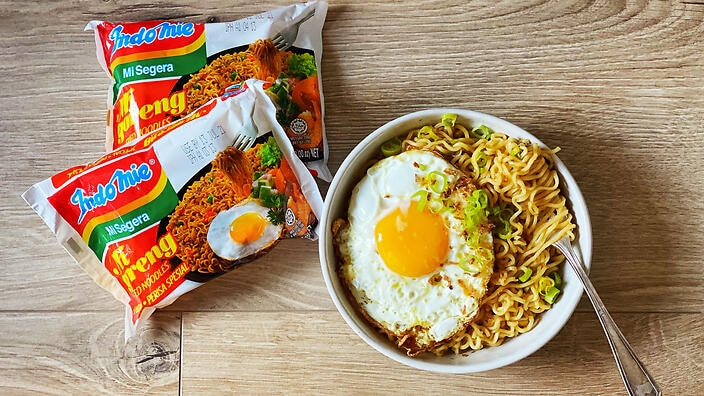

Indomie Goreng

Indomie goreng is the most popular and delicious instant noodle in Indonesia. It's so popular that they also have it around the world!
Sometimes I still hear from many non-indonsians cooking this instant noodle wrong, but no worries! Today I will show you just how simple and easy this instant noodle is made!
- 1 pack Indomie goreng
- 1 egg
- 1 spring onions
- put enough water in a saucepan and heat it till it boils, while waiting for it to boil open indomie goreng pack and take the ingredients out
- when the water starts to boil add the noodles. DO NOT ADD THE INGREDIENTS in the saucepan! Instead take a clean plate, open the ingredients and put all of the ingredients on the plate
- when the noodles are cooked turn off heat and pour out all of the water, if you have difficulties I suggest using a strainer
- after all the water has been strained add the noodles on top of the ingredients on top of the plate and mix thoroughly!
- Heat cooking oil in a frying pan over medium heat. Crack in the eggs and season eggs with salt to taste. Continue frying until whites crips on the edges and yolk is just set but runny in the center, or according to your preference. Serve the Indomie Goreng with eggs on top and garnish with remaining scallion greens. Enjoy!